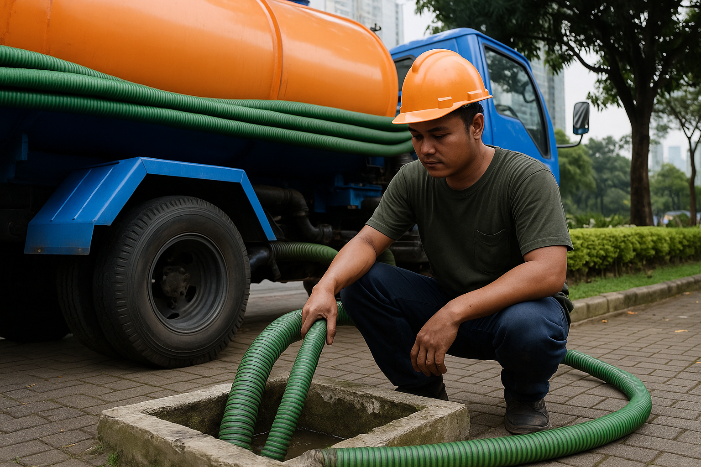
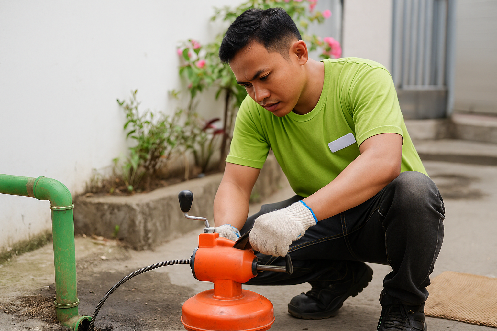

LAYANAN UNGGULAN
Solusi Sanitasi Modern
Untuk Kenyamanan dan Kebersihan Lingkungan Anda.

Sedot WC
Layanan Sedot WC Profesional
Pengurasan dan pembersihan septic tank secara menyeluruh dengan prosedur aman, cepat, dan menjaga kebersihan lingkungan sekitar.
Selengkapnya

Service Saluran
Perbaikan Saluran Tersumbat
Penanganan saluran mampet dan pipa tersumbat dengan peralatan teknis yang tepat dan tim berpengalaman untuk hasil optimal.
Selengkapnya

Renovasi WC
Renovasi & Perbaikan WC
Jasa renovasi dan penataan ulang WC agar lebih nyaman, higienis, dan fungsional, disesuaikan dengan kebutuhan hunian maupun tempat usaha Anda.